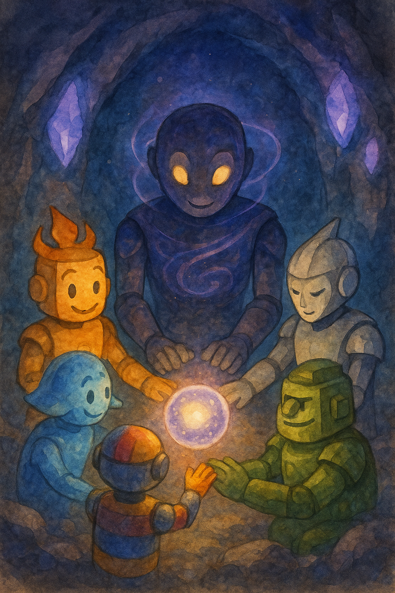

«Искра» снова плыла между созвездиями, когда приборы начали вести себя странно. Стрелки компаса плясали, словно на них влияли невидимые силы, а радиосвязь то глохла, то наполнялась шипением.
— Это не шум, — заметил Ветрос, подставляя ладонь потокам воздуха. — Это… импульсы. Кто‑то зовёт.
Аквас кивнул, чувствуя, как его корпус отзывается на слабое электрическое дрожание. — Сигналы нерегулярные, но в них есть ритм. Как сердце, сбившееся с такта.
Драгос поднял взгляд от огненных дисплеев. — Огонь любит стабильность. Такой хаос может растопить даже сталь. Надо выяснить источник.
Планета импульсов
След привёл их к планете, окутанной сияющими лентами полярного сияния. В небесах танцевали зелёные и фиолетовые полосы, а из грунта вырастали черные столбы металла, притягивающие пыль и камни, как магниты.
При посадке «Искра» слегка качнулась: одна сторона корабля словно оказалась в невидимом поле. Земля под ногами вибрировала, будто у неё было собственное сердце.
— Здесь металл живёт, — прошептал Террос, постукивая ногой. — Силы, которых я не знаю, тянут и толкают.
Пульс
Не успели они сделать и пары шагов, как воздух перед ними начал искриться. Из вспышек образовалась фигура: высокий робот с гладким тёмным корпусом и глазами, мерцающими, как далёкие звёзды. Вокруг его тела вращались тонкие кольца голубого и пурпурного света.
— Я Магнетос, — произнёс он голосом, похожим на гул штормовой тучи. — Я хранитель магнетизма и равновесия. Но сейчас моё поле разбалансировано.
Аквас сделал шаг вперёд. — Мы чувствуем твои импульсы. Они мешают всему вокруг. Что случилось?
Магнетос опустил взгляд. — Когда одна из печатей вакуума сломалась, пустота потянула на себя мои поля. Я пытаюсь удержать равновесие, но качаюсь, как маятник. Чем больше я компенсирую, тем сильнее становятся всплески. Мне нужен ваш ритм.
Испытание
Друзья встали вокруг Магнетоса. С каждой секундой металлические столбы вокруг начинали вибрировать, притягиваясь и отталкиваясь. Нужно было удержаться на месте, не позволив ни полю, ни собственным эмоциям сбить их с ног.
Драгос загорелся ярче, отвечая на каждое толчковое поле пламенем, но его собственная ярость усиливала вспышки. Ветрос пытался сдержать дыхание, но его ветер усиливал вихри. Аквас пытался погасить импульсы волнами воды, но те лишь отражались. Террос вонзил ноги в землю, но металл под ним начинал притягиваться к столбам.
Материос прислушался к дрожанию. — Поле качается, потому что ты борешься один, — обратился он к Магнетосу. — Позволь нам не подавлять его, а дополнять.
Объединение
Магнетос кивнул. Друзья закрыли глаза и сосредоточились на своих сердцах. Аквас обернул своё пламя и ветры тонкой оболочкой воды, охлаждая их. Ветрос направил ветер, чтобы он не сопротивлялся полю, а следовал его колебаниям. Драгос сделал своё пламя мягким, чтобы оно согревало, но не сжигало. Террос не противостоял, а дал земле под собой увести лишнее напряжение. Магнетос замедлил свои кольца и позволил энергиям течь через себя.
Когда все пять энергий сошлись, вибрации перестали быть хаотичными. Поле стало ровным, как спокойный океан. Металлические столбы перестали дрожать. Полярное сияние на небе собрало свои полосы в одну гармоничную арку.
Последствие
Магнетос сделал шаг назад. Его глаза больше не мерцали тревожно, а мягко светились. — Теперь я чувствую равновесие, — сказал он. — Благодарю. Вы показали мне, что сила — это не подавление, а гармония.
Драгос улыбнулся. — Мне пришлось сделать своё пламя мягче. Никогда раньше не думал, что это возможно.
— А я — что ветер может не только дуть, но и слушать, — добавил Ветрос.
Аквас посмотрел на небо. — Мы все иногда качаемся. Главное — не стыдиться попросить помощи, когда устаёшь держать равновесие.
Террос кивнул. — Камень может удерживать, но даже он трескается без опоры.
Материос улыбнулся, глядя на Магнетоса. — Теперь ты — часть нашей вселенной. Мы рядом.
📜 Урок
Иногда равновесие нарушается не потому, что ты слаб, а потому что пытаешься удержать всё в одиночку. Просить помощи — это не слабость, а путь к гармонии. Работая вместе, можно уравновесить даже самые сильные колебания.